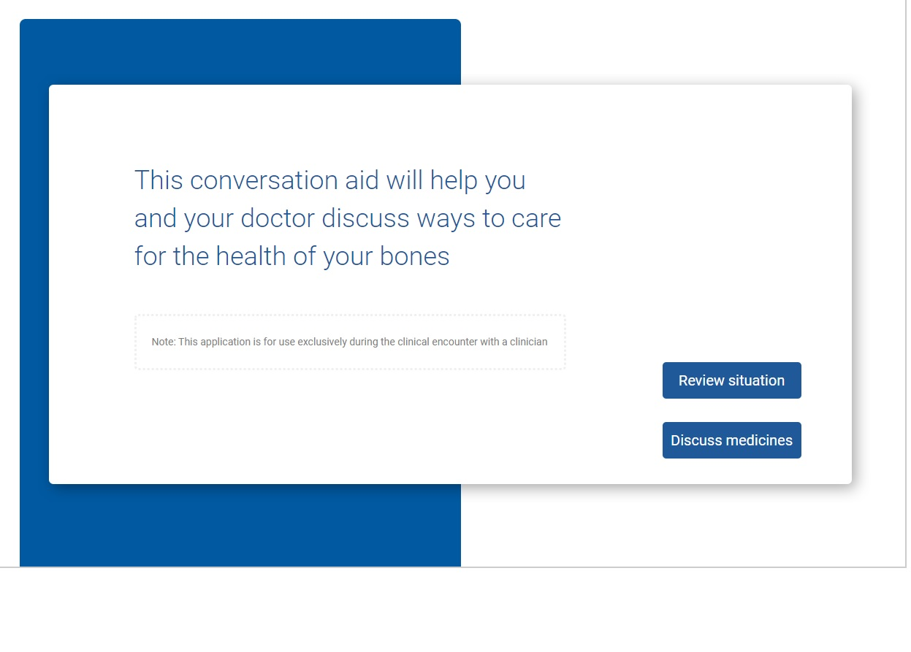

Decision-making tool prototype
Problem
During medical appointments, patients are often required to make decisions regarding their healthcare. In order to make these decisions, patients have to weigh complicated medical information that can be difficult to understand.
Solution
The decision-making tool is designed for use during medical appointments. Using the tool, the patient and their doctor can explore the available treatment options, coming to a decision that makes medical sense for the patient, and that fits in with the patient's abilities, personal goals, and values.
Our project goal was to update an existing tool that was designed for use during medical appointments discussing bone health, including conditions such as osteoporosis and osteopenia.
Design Process
In order to update the current tool, we needed to discover what patients' needs are during medical appointments, by finding out what questions they ask and what concerns they have. In addition, we needed to update the tool to include the newest available medications.
Observation of medical appointments
We observed and recorded encounters with patients and clinicians where bone health was discussed. We noted patients' questions and concerns, and also which issues clinicians prioritized during the appointment. These observations helped us narrow down the possible issues that the tool might present for discussion.
Consultation with clinicians
We asked clinicians which new medications should be presented to patients. We worked with clinicians to describe the effects and risks of these medications in language that was both easy to understand and medically accurate. This step required us to decide which information might be helpful in making medical decisions, and which information might be omitted or left up to the doctor to discuss. It was important not to present too much information in the tool, since this would lead to information fatigue for patients.
Prototype iteration
Using Axure, we performed iterations on a tool prototype. We met with clinicians throughout this process, to make sure that the information being presented was correct, and that the content included in the tool would be useful during a medical consultation.
Framing the problem
In early prototypes, we considered how the issue of bone health could be presented to the patient. For example, the issue could be presented as a named medical condition, such as osteoporosis. Alternatively, the issue could be presented as the negative effect of a bone fracture.
In later iterations of the tool, we emphasized the effects that poor bone health could have on patients' lives, such as fracture. With this approach, we hoped to present the issue of bone health in terms that people could identify with.
Revising the medication list
In order to include the newest medications, the prototype needed several more iterations. The list of medications needed revision to include only the meds that were most often used during appointments. We also needed to consider what sort of information about each med would be most useful to patients and their doctors.
In a later prototype, the list of medications was edited. Only the most common medications are presented, and their possible impact on patients' daily lives is emphasized.
Patients were also shown their risk of fracture in a visual format, both with and without the option of medication.